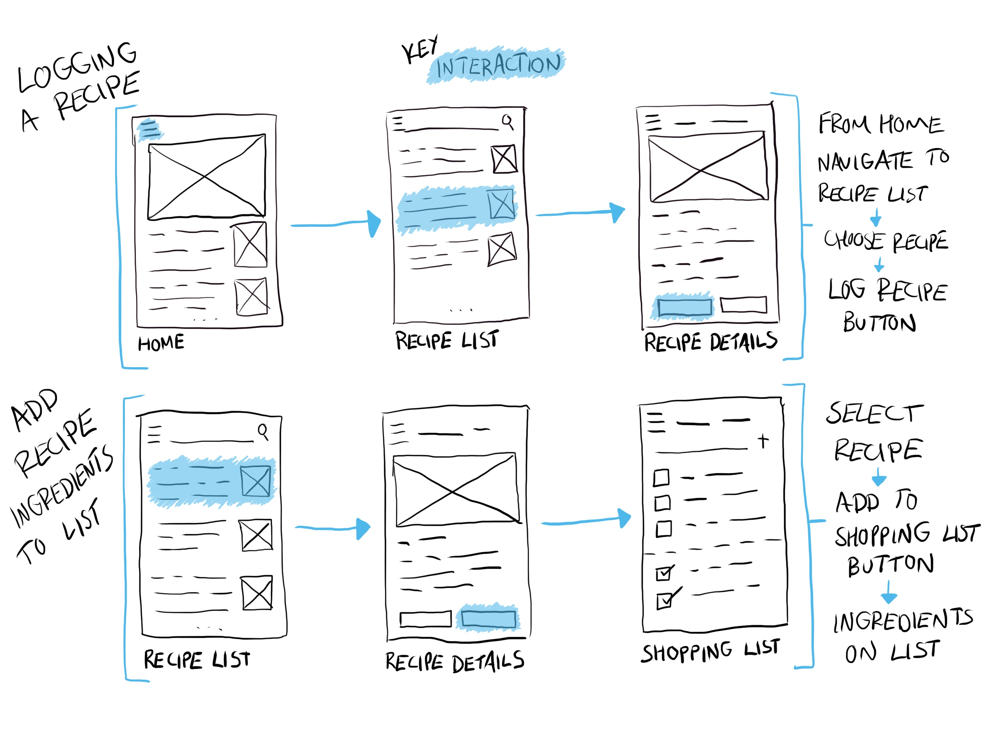
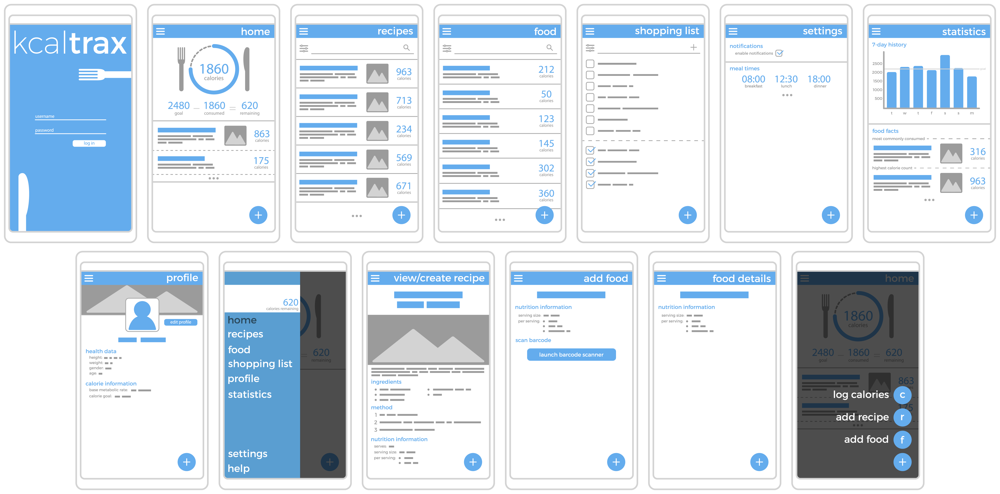
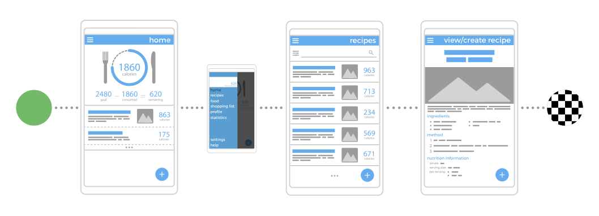
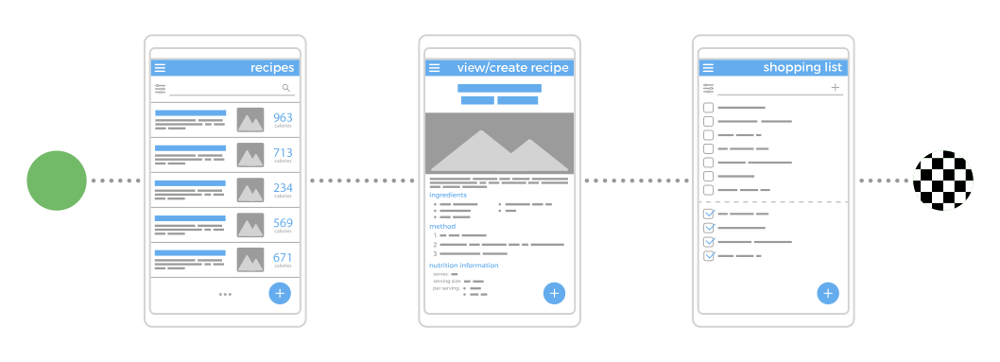

Wireframing
Designing the look and flow of the app.
Wireframes
First lo-fi wireframes were created to get initial ideas down on paper and explore what views/pages would be required.

Once the lo-fi wireframe process had been completed, I then produced slightly higher fidelity wireframes to clearly
demonstrate each screen and the information within.

User Flows
Using the above wireframes, I then produced user flows to show how a user would use the app to achieve the tasks
outlined in the need statements. Below are two examples, in the context of the defined persona Isaac.
Background: Isaac has just prepared and eaten a meal which is a regular part of his diet. He now needs to log the calories in the app.

The first thing that Isaac sees when opening the app is the ‘progress plate’, which immediately indicates his progress to meeting his calorie
goal and a list showing what meals have been logged that day. He presses the hamburger icon to open the menu and navigate to his recipe list.
On the second screen all of the recipe’s which Isaac has input to the app are visible. Each recipe has a title, brief description, picture and
clearly shows the calorie information. Isaac selects the meal he wants to log.
From the recipe details page Isaac is able to see more comprehensive information about the selected meal and the option to log the meal. He presses
the ‘log this meal’ button and his calorie total for the day updates.
Background: Isaac is planning a shopping trip and wants to quickly produce a list to ensure he buys only what he needs.

From the recipe list, Isaac navigates to the recipe which he wishes to buy the ingredients for.
From the recipe details screen Isaac can view all of the ingredients required and also has the option to add all of the ingredients to his shopping list
by pressing the 'add to shopping list' button, which he does.
All of the ingredients and the appropriate quantities have now been added to Isaac’s shopping list.